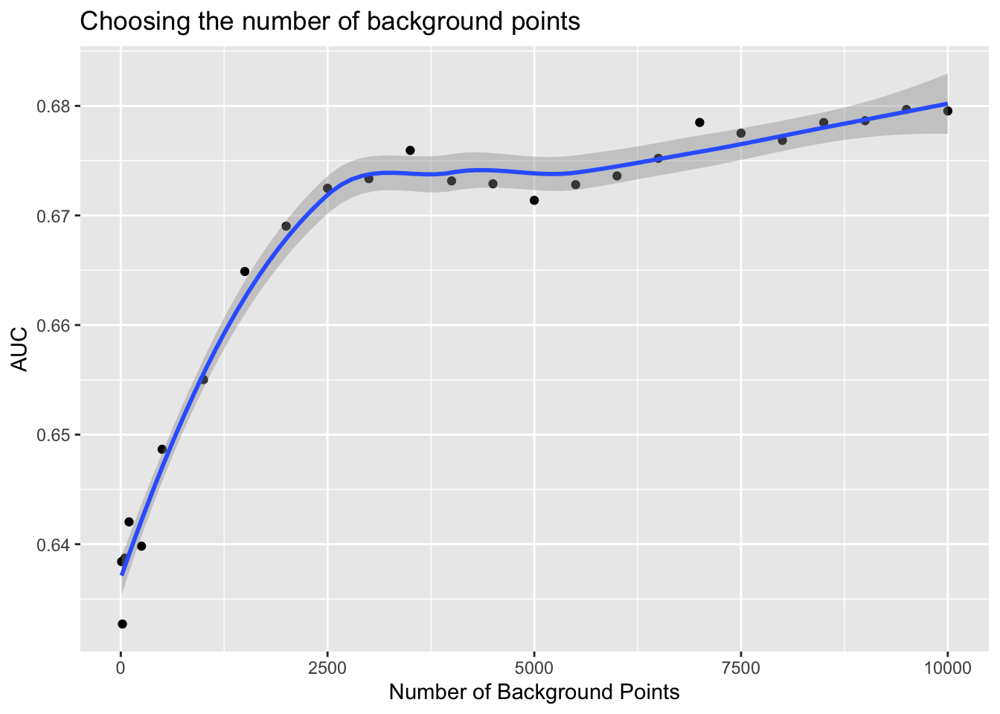

source("setup.R")
obs = sf::read_sf(file.path("data", "obs", "obs-covariates.gpkg")) |>
na.omit()
bkg = sf::read_sf(file.path("data", "bkg", "bkg-covariates.gpkg")) |>
na.omit()Background count
We arbitrarily chose to select 4 background points for every observation. But what is the best number to pick? There is no rule about this, and what number is best may be context dependent.
Here we show some simple steps to determine a best number of background points for a given workflow. We’ll build a series of models selecting a different number of background points each time, and then we’ll compare the results.
First, we’ll load the observations and background data.
This time we want to make a a single model that covers May through October. We need to filter out the records by month, so first we’ll make a month_name variable.
months = month.abb[5:10]
obs = obs |>
dplyr::mutate(month_name = factor(format(month_id, "%b"),
levels = month.abb)) |>
dplyr::filter(month_name %in% months)
bkg = bkg |>
dplyr::mutate(month_name = factor(format(month_id, "%b"),
levels = month.abb)) |>
dplyr::filter(month_name %in% months)Let’s make a ‘standard summer’ to use for prediction by computing the mean sst, u_wind and v_wind.
sst_path = "data/oisst"
sst_db = oisster::read_database(sst_path) |>
dplyr::arrange(date) |>
dplyr::mutate(month = format(date, "%b")) |>
dplyr::filter(month %in% months)
wind_path = "data/nbs"
wind_db = nbs::read_database(wind_path) |>
dplyr::arrange(date)|>
dplyr::mutate(month = format(date, "%b"))|>
dplyr::filter(month %in% months)
u_wind_db = wind_db |>
dplyr::filter(param == "u_wind")
v_wind_db = wind_db |>
dplyr::filter(param == "v_wind")
preds = read_predictors(sst_db = sst_db,
u_wind_db = u_wind_db,
v_wind_db = v_wind_db)Next we can make a ‘standard’ summer by computing the mean for each attribute.
prreds = stars::st_apply(preds, c("x", "y"), mean,
na.rm = TRUE) |>
print()stars object with 2 dimensions and 3 attributes
attribute(s):
Min. 1st Qu. Median Mean 3rd Qu. Max. NA's
sst 10.5748390 16.7589467 22.7872251 21.0149595 24.984345 27.565129 820
u_wind -1.0066627 1.1092392 1.6796762 1.5544711 2.023749 2.645772 573
v_wind -0.2943454 0.4423889 0.8368855 0.9322796 1.528722 2.138727 573
dimension(s):
from to offset delta refsys point x/y
x 1 74 -76.38 0.25 WGS 84 FALSE [x]
y 1 46 46.12 -0.25 WGS 84 FALSE [y]Now we can make the models for those months, but we need to establish the number of background points for each model. Let’s do a simple progression… from 10 to 10000. We’ll build a model for each number of background points, make a predictive map and then compute AUC.
Comments in the code block below help explain the steps taken.
# choose a sequence of background counts
nback = c(10, 20, 50, 100, 250, seq(from = 500, to = 10000, by = 500))
# iterate through each count
x = lapply(nback,
# for each count apply this function where
# @param nbk count of background to use
# @param ob the full observation set
# @param bk the full background set
# @param preds the predictor rasters
# @return a one row tibble with count and presence AUC
function(nbk, ob = NULL, bk = NULL, preds = NULL){
# prepare all of the observations
obn = dplyr::select(ob, dplyr::all_of(c("sst", "u_wind", "v_wind"))) |>
sf::st_drop_geometry()
# prepare and then sample the background
set.seed(1234)
bkn = dplyr::select(bk, dplyr::all_of(c("sst", "u_wind", "v_wind"))) |>
sf::st_drop_geometry() |>
dplyr::slice_sample(n=nbk)
# make the vector that identifies obs-vs-bkg
flag = c(rep(1, nrow(obn)), rep(0, nrow(bkn)))
# create the input data in the same order as the flag
input = dplyr::bind_rows(obn, bkn)
# build model!
model = maxnet::maxnet(flag, input)
# predict!
p = predict(model, preds, type = 'cloglog')
# compute pAUC
pauc = maxnetic::pAUC(p, ob, time_column = NULL)
# return a tibble
dplyr::tibble(nbkg = nbk, AUC = pauc$area)
}, ob = obs, bk = bkg, preds = preds) |>
# bind all of the individual tibbles into one data frame (still a tibble)
dplyr::bind_rows() |>
dplyr::glimpse()Rows: 25
Columns: 2
$ nbkg <dbl> 10, 20, 50, 100, 250, 500, 1000, 1500, 2000, 2500, 3000, 3500, 40…
$ AUC <dbl> 0.6384068, 0.6327138, 0.6387216, 0.6420354, 0.6398206, 0.6486590,…Now we can show these with a simple plot.
Code
ggplot2::ggplot(data = x, ggplot2::aes(x = nbkg, y = AUC)) +
ggplot2::geom_point() +
ggplot2::geom_smooth(method = "loess", se = TRUE, formula = y ~ x) +
ggplot2::labs(x = "Number of Background Points",
title = "Choosing the number of background points")
This workflow reveals to us that for the seasonal May-Oct model that we get no improvement in AUC once we get to about 2500. With this hindsight in hand we might have chosen a much smaller number of background points with significant loss of modeling power.
Back to top